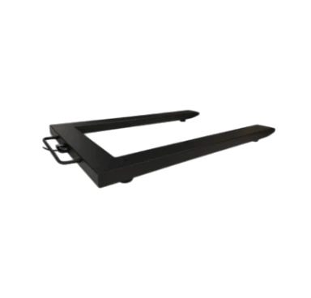
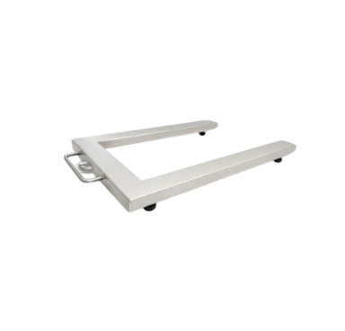

-Nośność standardowa: od 150 do 6000kg
(w zależności od modelu)
-Działka odczytu:od 0,05kg do 2kg
-Wymiary platformy:840×1260×85 mm
-Zasilanie:230V + akumulator w zestawie
RS z DT(drugi RS opcjonalnie)
-Uchwyt do mocowania na ścianie w zestawie
-Nośność standardowa:od 300 do 6000kg (w zależności od modelu) -Działka odczytu:od 0,1kg do 2kg -Wymiary platformy:840×1260×85mm -Zasilanie:230V(opcjonalnie akumulator)

-Stal szlachetna DIN 1.4301
-Nośność standardowa:od 150 do 3000kg
(w zależności od modelu)
-Działka odczytu:od 0,05kg do 1kg
-Wymiary platformy:840×1260×85mm
-Zasilanie:230V
-RS z DT(drugi RS opcjonalnie)
-Uchwyt do mocowania na ścianie w zestawie
-Stal szlachetna DIN 1.4301
-Nośność standardowa:od 300 do 3000kg(w zależności od modelu)
-Działka odczytu:od 0,1kg do 1kg
-Wymiary platformy:840×1260×85mm
-Zasilanie:230V